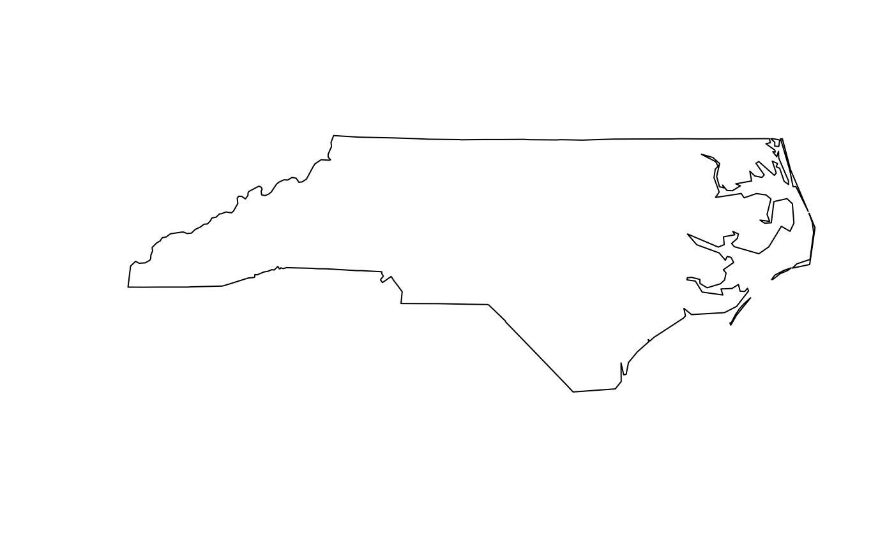

Combine several feature geometries into one, without unioning or resolving internal boundaries
st_combine(x) st_union(x, y, ..., by_feature = FALSE, is_coverage = FALSE)
| x | object of class |
|---|---|
| y | object of class |
| ... | ignored |
| by_feature | logical; if TRUE, union each feature, if FALSE return a single feature that is the geometric union of the set of features |
| is_coverage | logical; if TRUE, use an optimized algorithm for features that form a polygonal coverage (have no overlaps) |
st_combine returns a single, combined geometry, with no resolved boundaries; returned geometries may well be invalid.
If y is missing, st_union(x) returns a single geometry with resolved boundaries, else the geometries for all unioned pairs of x[i] and y[j].
st_combine combines geometries without resolving borders, using c.sfg (analogous to c for ordinary vectors).
If st_union is called with a single argument, x, (with y missing) and by_feature is FALSE all geometries are unioned together and an sfg or single-geometry sfc object is returned. If by_feature is TRUE each feature geometry is unioned. This can for instance be used to resolve internal boundaries after polygons were combined using st_combine. If y is provided, all elements of x and y are unioned, pairwise (and by_feature is ignored). The former corresponds to gUnaryUnion, the latter to gUnion.
Unioning a set of overlapping polygons has the effect of merging the areas (i.e. the same effect as iteratively unioning all individual polygons together). Unioning a set of LineStrings has the effect of fully noding and dissolving the input linework. In this context "fully noded" means that there will be a node or endpoint in the output for every endpoint or line segment crossing in the input. "Dissolved" means that any duplicate (e.g. coincident) line segments or portions of line segments will be reduced to a single line segment in the output. Unioning a set of Points has the effect of merging all identical points (producing a set with no duplicates).
#> Reading layer `nc' from data source #> `/private/var/folders/24/8k48jl6d249_n_qfxwsl6xvm0000gn/T/RtmpfQZK4G/temp_libpathcda7399b6958/sf/shape/nc.shp' #> using driver `ESRI Shapefile' #> Simple feature collection with 100 features and 14 fields #> Geometry type: MULTIPOLYGON #> Dimension: XY #> Bounding box: xmin: -84.32385 ymin: 33.88199 xmax: -75.45698 ymax: 36.58965 #> Geodetic CRS: NAD27st_combine(nc)#> Geometry set for 1 feature #> Geometry type: MULTIPOLYGON #> Dimension: XY #> Bounding box: xmin: -84.32385 ymin: 33.88199 xmax: -75.45698 ymax: 36.58965 #> Geodetic CRS: NAD27#>